I'm a Senior Lecturer and Prize Fellow in the Mathematical Foundations group, Department of Computer Science, University of Bath.
My research is in the area of structural proof theory, where I investigate the fundamental structure of proofs and their application as type systems. I have worked on canonical graphical representations of proof (commonly known as proof nets), on computational interpretations of deep-inference proof theory, and on typed calculi for computational effects and imperative programming.
In this project we investigate the computational potential of deep-inference proof theory, via the Curry-Howard correspondence between intuitionistic logic and simple types for the lambda-calculus.
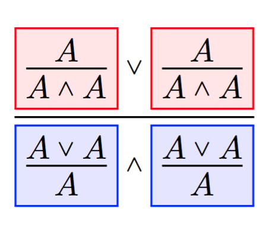
The FMC is extended with constructs for control flow to embed a complete imperative language including constants, conditionals, case switches, exception handling, and iteration (loops), in addition to the higher-order store, input-output, and probabilistic choice captured previously. The key features of the lambda-calculus again carry over: a confluent reduction semantics and a system of simple types that (in the absence of iteration) guarantees machine termination and strong normalization.
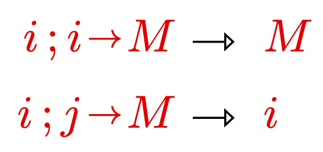
The simple types for the FMC are generalised to quantitative types (or non-idempotentent intersection types), in two variants, weak and strong. Weak typing coincides with machine termination and spine normalization, and strong typing with strong normalization and a notion of perpetual evaluation. The results apply immediately to the effects (store, IO, probabilistic choice) and strategies (CBV, monads, CBPV) encoded in the FMC.
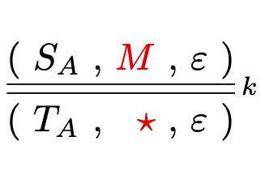
We present a system of simple types to give lower bounds on the probability of termination of probabilistic lambda-terms. The intuition is to take simple types and view the base type as signifying successful termination. Our type system then replaces base types with probabilities (rationals between zero and one).
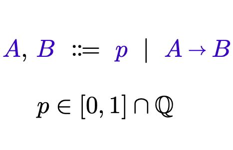
We extend the first-order Functional Machine Calculus, a language for Cartesian categories, to a model of relational computation. The Relational Machine Calculus (RMC) introduces non-determinism, iteration, and unification, making it a Kleene algebra that operates as a stack calculus with perfect duality between push and pop. The RMC naturally embeds various first-order models of computation, including automata, Turing machines, Petri nets, interaction nets, and logic programming.
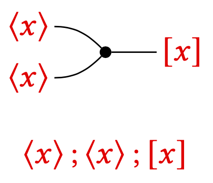
We investigate the semantics of the Functional Machine Calculus, introduced in the paper below. We give a domain-theoretic account of the untyped calculus, and for the typed calculus a Gandy-style proof of strong normalization and a categorical account as a Cartesian closed category.
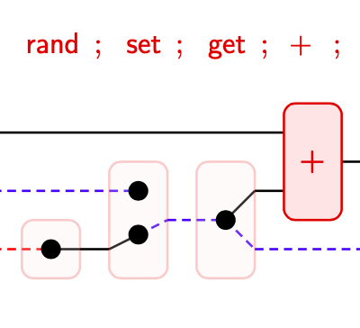
The Functional Machine Calculus (FMC) is a new model of effectful functional computation. Viewing the lambda-calculus as an instruction language for a simple stack machine in the style of Krivine, it is extended firstly with multiple stacks, to model the effects of state, I/O, probabilities, and non-determinism; and secondly with sequential composition, to model strategies including call–by–name, call–by–value, and call–by–push–value.
PDF | arXiv:2212.08177 | DOI: 10.46298/entics.10513 | Talk (HOPE'21)
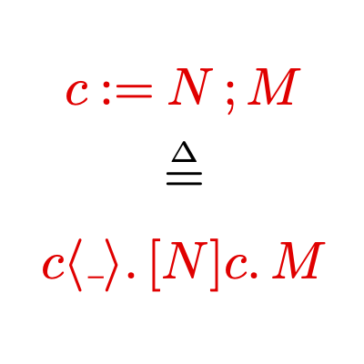
We present a simple method for normalization of intuitionistic combinatorial proofs. Rather than including a cut construct inside the calculus, or computing the result directly by combinatorial manipulation, we build a tree with combinatorial proofs as nodes and cuts as edges. Normalization may then follow the standard reduction rules of the sequent calculus, but in a setting that is free of permutations.
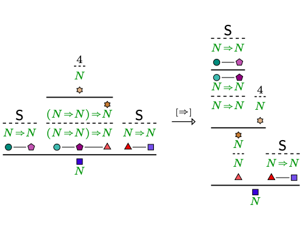
We investigate intersection types and resource lambda-calculi from the perspective of deep-inference proof theory. We give a single underlying type system that is parameterized in a choice of algebraic laws to represent different flavours of quantitative reasoning about lambda-calculi.
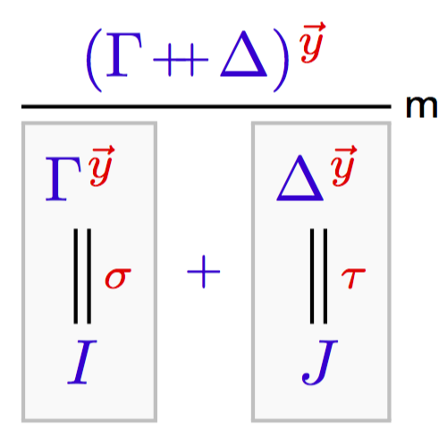
Probabilistic lambda-calculi are generally non-confluent, with call-by-name and call-by-value providing different results. Via a decomposition of the usual probabilistic sum into a generator that generates a probabilistic event and a choice that evaluates differently depending on a given event, we capture both reduction regimes, as well as many intermediate ones, in a single, confluent probabilistic lambda-calculus.
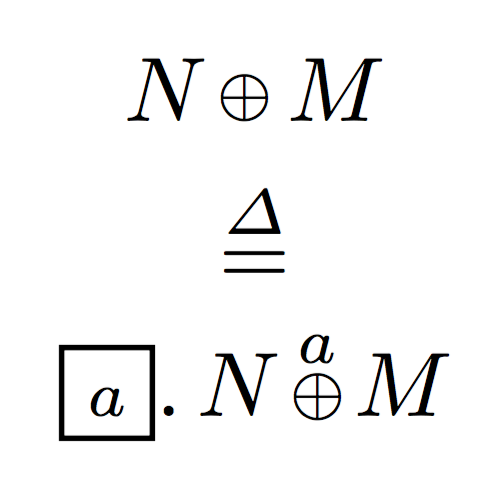
We investigate the computational side of the switch rule of deep-inference proof theory, and link it to end-of-scope operators and director strings in lambda-calculus. We use this to extend the atomic lambda-calculus, obtaining a more refined version of full laziness, spine duplication.
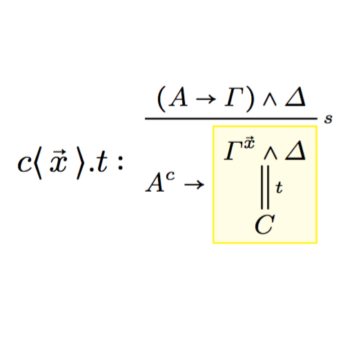
We give two flavours of proof nets for additive linear logic with first-order quantification: one where existential witnesses are recorded via explicit substitutions, attached to axiom links; and one where witness information is omitted, and reconstructed by unification.
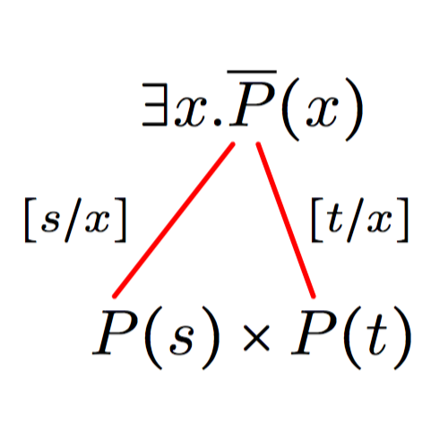
We extend Hughes's classical Combinatorial Proofs to intuitionistic logic. We obtain a purely geometric, concrete semantics that has polynomial full completeness (no size explosion when translating from sequent calculus) and local canonicity (all non-duplicating permutations are factored out).
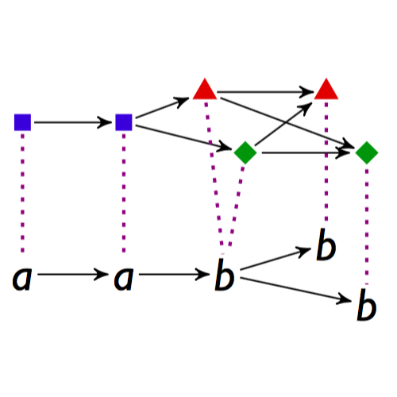
Bi-intuitionistic linear logic (BILL) combines the tensor and linear implication of intuitionistic linear logic (ILL) with their duals, par and subtraction, relating tensor and par through a linear distributivity. We give canonical proof nets for this proof-theoretically challenging logic, with correctness through both contractibility and switching.
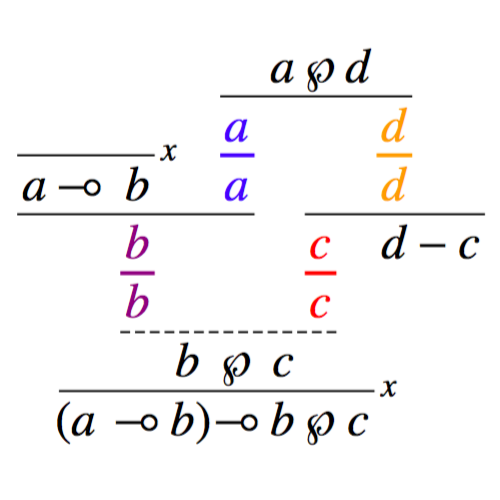
We give a new notion of proof net for Multiplicative-Additive Linear Logic, that strikes a subtle balance between efficiency and canonicity. Conflict nets are canonical for all local rule commutations, which are those that do not incur a global duplication. As a consequence they have linear size compared to sequent proofs, avoiding the exponential growth of Hughes and Van Glabbeek's Slice Nets.
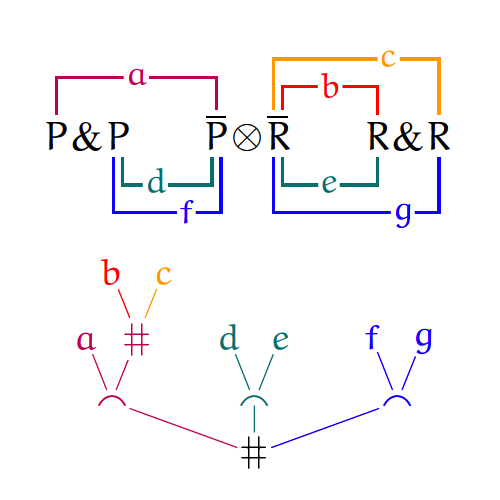
Proof equivalence in MLL with units is shown to be PSPACE-complete, by a reduction from the graphical formalism called Non-Deterministic Constraint Logic. This effectively rules out a satisfactory notion of proof net with units, as such a notion would constitute a tractable decision algorithm for proof equivalence.
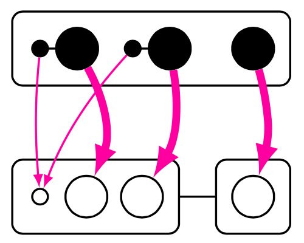
We consider a notion of semi-star-autonomous category: star-autonomous categories without units, corresponding to Girard's proof nets for MLL. (Available online since November 2014.)
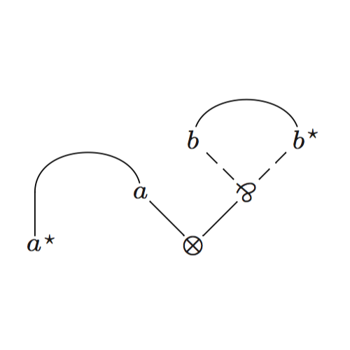
We give an effective correctness criterion for additive proof nets, which is naturally expressed in Petri nets, and is the equivalent of Danos contractibility for MLL. In addition we give simple proof search algorithms for additive linear logic with and without units and an effective correctness algorithm for additive proof nets with units, and we show that first-order additive linear logic is NP-complete.
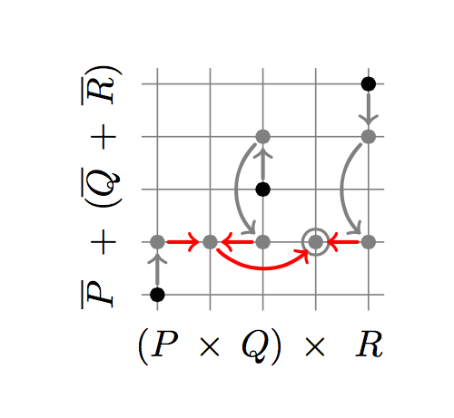
Proof equivalence in MLL with units is shown to be PSPACE-complete, by a reduction from the graphical formalism called Non-Deterministic Constraint Logic. This effectively rules out a satisfactory notion of proof net with units, as such a notion would constitute a tractable decision algorithm for proof equivalence. (Superseded by the journal version Proof equivalence in MLL is PSPACE-complete.)
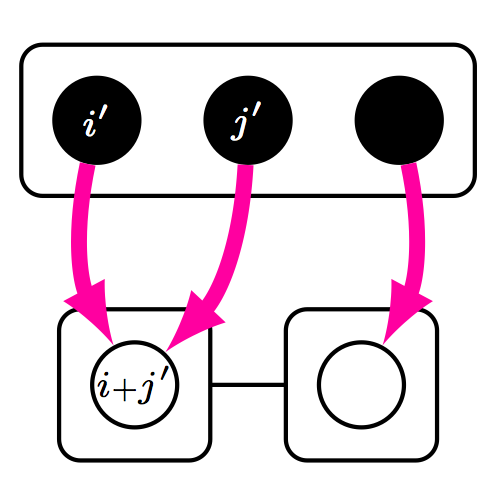
The atomic lambda-calculus is a typeable lambda-calculus with explicit sharing, which originates in a Curry-Howard interpretation of a deep-inference system for intuitionistic logic. In this paper we prove strong normalization of the typed atomic lambda-calculus using Tait's reducibility method.
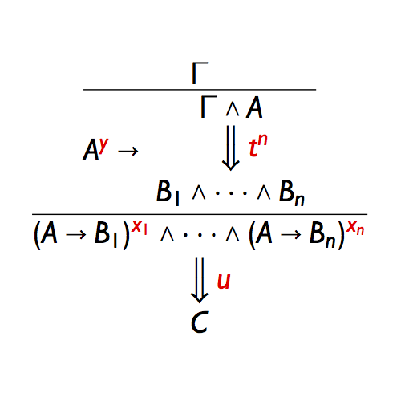
The atomic lambda-calculus is a typeable lambda-calculus with explicit sharing, based on a Curry-Howard-style interpretation of the deep inference proof formalism. Duplication of subterms during reduction proceeds atomically, i.e. on individual constructors, similar to optimal graph reduction in the style of Lamping. The calculus preserves strong normalisation and achieves fully lazy sharing.
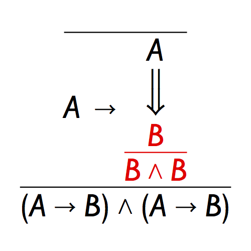
The paper describes canonical proof nets for additive linear logic, or sum-product logic, the internal language of categories with free finite products and co-products. Starting from existing proof nets, which disregard the unit laws, canonical nets are obtained by a simple rewriting algorithm, for which a substantial correctness proof is provided.
Awarded the LICS 2011 Kleene award for best student paper
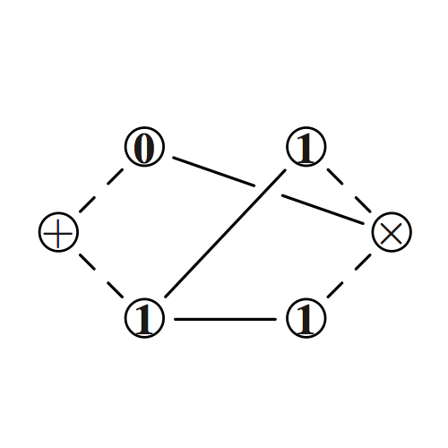
The paper investigates cut-elimination in classical proof forests, a proof formalism for first-order classical logic based on Herbrand's Theorem and backtracking games in the style of Coquand. Cut-free classical proof forests were described by Miller, and are called Expansion Tree Proofs.
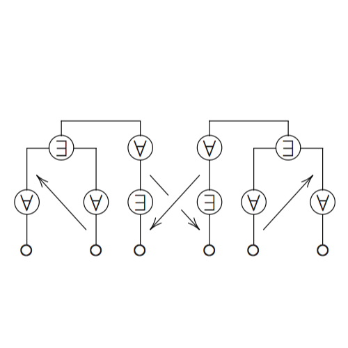
Superseded by The Functional Machine Calculus III: Control (MFPS 2025).
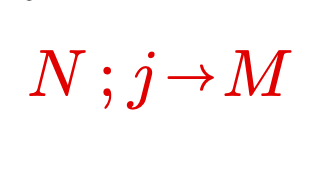
Superseded by The Functional Machine Calculus (MFPS 2022).
Superseded by A deep quantitative type system.
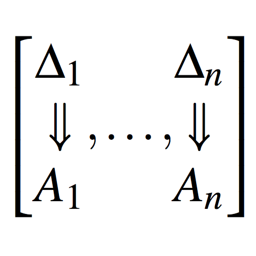
Superseded by Atomic lambda-calculus: a typed lambda-calculus with explicit sharing.
Superseded by Classical Proof Forestry.
Doctoral thesis: Type Systems for Probabilistic lambda-Calculi
Doctoral thesis: On the Simply-Typed Functional Machine Calculus: Categorical Semantics and Strong Normalisation
Doctoral thesis: A lambda-calculus that achieves full laziness with spine duplication
A collection of educational computer games for logic in computer science, made by final-year undergraduate students.
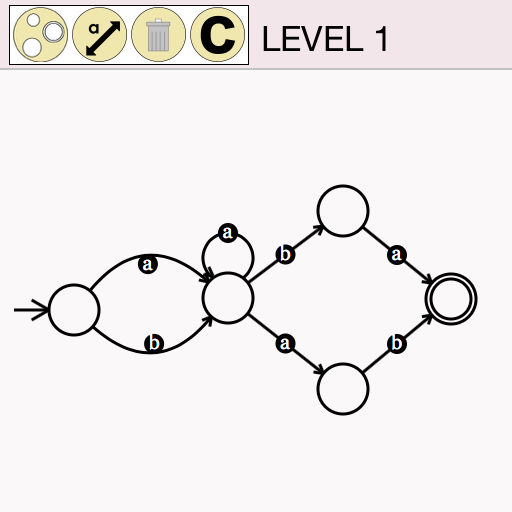
A LaTeX package for drawing derivations in open deduction.
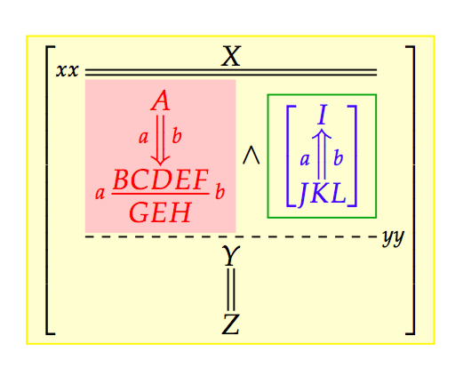
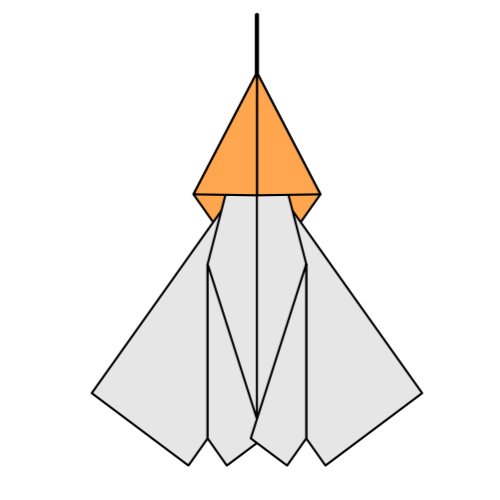
Department of Computer Science
University of Bath
Laboratory for the Foundations of Computer Science (LFCS) School of Informatics | University of Edinburgh
Doctoral thesis: Graphical Representation of Canonical Proof: Two case studies
Thesis advisor: Professor Alex Simpson
Department of Philosophy | Utrecht University
Master's thesis: Graph Rewriting for Natural Deduction and the Proper Treatment of Variables
Winner of the Cognitive Artificial Intelligence thesis award 2007, Department of Philosophy, Utrecht University
Thesis advisors: Professor Albert Visser and Professor Vincent van Oostrom
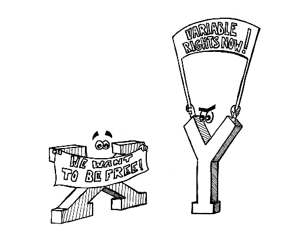
Department of Computer Science 1 West 4.67 Claverton Down Bath BA2 7AY United Kingdom w.b.heijltjes@bath.ac.uk